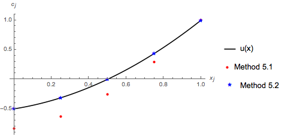
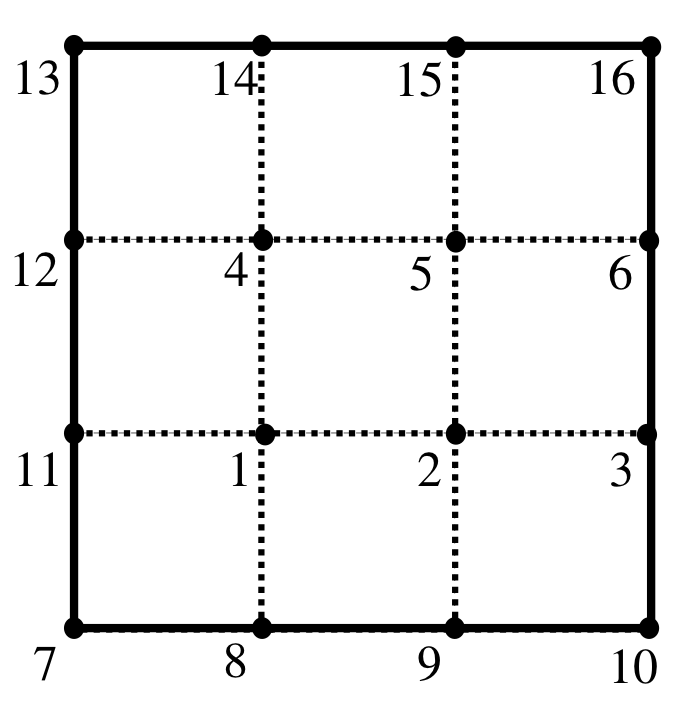

5. Mismunaaðferðir¶
Við byrjum á að skoða praktískar og tölulegar aðferðir til þess að nálga lausnir á afleiðujöfnum og hlutafleiðujöfnum með upphafs- og jaðarskilyrðum.
Fyrsta aðferðin sem við ætlum að fjalla um er mismunaaðferðen: difference method
Smelltu fyrir ítarlegri þýðingu.
5.1. Mismunaaðferð fyrir venjulegar afleiðujöfnur¶
Við skoðum fyrst jaðargildisverkefni fyrir almenna annars stigs afleiðujöfnu á bili \([a,b]\):
Við gerum ráð fyrir að raungildu föllin \(a_0, a_1,a_2\) séu samfelld í \([a,b]\) og fallið \(f\) sé raungilt.
Við veljum skiptingu á bilinu \([a,b]\), þ.e.
Til þess að einfalda reikninga getum við valið að skipta bilinu í jafna hluta, þ.e.
Athugum að þá gildir \(x_{j-1}=x_j-h\) og \(x_{j+1}=x_j+h\).
Við finnum gildi afleiðujöfnunnar í punktunum \(x_j\):
Við þurfum að finna nálgun fyrir afleiður \(u'(x_j),u''(x_j)\). Það er eðlilegt að nálga afleiður \(u'(x_j),u''(x_j)\) með samsvarandi mismunakvóta.
Við ætlum að nota eftirfarandi nálgun
- Í vinstri endapunkti \(x_0=a\), notum við
- Í innri punktum bilsins \(x_1, \dots, x_{N-1}\), notum við
- Í hægri endapunkti \(x_N=b\), notum við
Hugmyndin er að umrita hneppi (1) með nálgununum að ofan og finna lausnir \(u(x_j)\).
Af hverjum veljum við nálgunarformúlur (1)? Við metum skekkju í nálgunarformúlunum sem við höfum skrifað að ofan. Gerum ráð fyrir að fall \(\varphi\in C^4(I)\) á bili \(I\), og \(x, x+h, x-h\) séu í \(I\). Þá er
þar sem \(\xi \in (x,x+h)\) og \(\eta \in (x-h,x)\).
Við berum saman mismunandi nálgunarformúlur fyrir fyrsta stigs afleiður:
Fyrir annars stigs afleiður höfum við:
Við sjáum að ef við notum nálgunarformúluna (2) þá er skekkjan af öðru stigi í \(h\). Ef við notum fyrstu tvær formúlurnar, þá er skekkjan af fyrsta stigi í \(h\). Það segir okkur að þegar \(h \ll 1\), þá stefnir skekkjan í nálgunarformúlunni sem við viljum nota hraðar á núll, sem er auðvitað miklu betra.
Til þess að einfalda rithátt skrifum við \(u_j=u(x_j)\) og \(f_j=f(x_j)\). Ennfremur, til þess að leggja áherslu á að \(u_j=u(x_j)\) er óþekkt stærð sem við viljum reikna út, setjum við að lokum \(c_j\) í staðinn fyrir \(u_j=u(x_j)\).
Mismunajafna í vinstri endapunkti
Í vinstri endapunkti \(x_0=a\) höfum við
Við nálgum afleiðuna eins og að ofan, þá fáum við
og að lokum notum við \(c_j\)
Mismunajafna í innri punktum bilsins
Í innri punktum bilsins \(x_1, \dots, x_{N-1}\), notum við nálgunarformúlur (2), og að lokum fáum við
og fyrir \(c_j\)
Mismunajafna í hægri endapunkti
Í hægri endapunkti \(x_N=b\), notum við nálgarformúluna að ofan, þá fæst
og fyrir \(c_{N-1}\) og \(c_N\) þá er
Hneppið
Að lokum tökum við saman nálgunarjöfnurnar í \((N+1)\times(N+1)\) hneppi:
sem við getum umskrifað sem
5.1.1. Sýnidæmi¶
Við lítum á eftirfarandi jaðargildisverkefni:
Fyrst skiptum við bilinu jafnt í tvo hluta, þ.e.
og við notum nálgunarjöfnurnar (3), og þá fáum við
sem gefur okkur
Ef við veljum \(N=4\), þ.e.
þá fáum við
Lausnin er

Lausnir fyrir \(N=4, 10, 100\) og lausn \(u(x)={1 \over 2} (2 x^2+x-1).\)

Skekkjan \(|u_j-c_j|\) í \(x=1/2\) sem fall af \(N\).
5.2. Heildun yfir hlutbil¶
Við skoðum nú tilfelli þegar afleiðuvirkinn er af Sturm-Liouville gerð, þ.e.
þar sem við gerum ráð fyrir að fallið \(p\) sé samfellt diffranlegt á bili \([a,b]\), og fallið \(p\) sé samfellt á \([a,b]\).
Jaðargildisverkefnið er af gerðinni
Látum \([c,d]\) vera hlutbil af bilinu \([a,b]\). Við heildum jöfnuna yfir \(x\in [c, d]\), þá er
Við viljum finna nálgunarjöfnur fyrir jöfnuna að ofan. Við notum mismunakvóta til þess að nálga afleiður. Við veljum skiptingu
Við nálgum heildi með Riemann-summu með miðpunktsnálgun:
þar sem \(m_j\) eru miðpunktar hlutbilanna
Athugum að
Eins og við gerðum í 5.1, þurfum við að skoða jaðarskilyrðin hvert í sínu lagi.
Til þess að einfalda rithátt, fyrir öll \(j\) táknum við
Mismunajafna í vinstri endapunkti bilsins
Við heildum yfir hlutbilið \([x_0, m_0]\). Athugum að \(m_0-x_0=\frac 12 h\). Við fáum
sem gefur okkur
Við nálgum heildið með
Við nálgum afleiðuna \(u'(m_0)\) með mismunakvóta:
Þá er \(u'(x_0)\)
Nú notum við jaðarskilyrði í \(x_0\):
sem er nú
Eins og áður setjum við \(c_0, c_1\) í staðinn fyrir \(u_0, u_1\) til þess að tákna óþekkta stærð:
Mismunajafna í hægri endapunkti
Við gerum svipað fyrir hlutbilið \([ m_{N-1}, x_N]\):
Við nálgum heildið með
og afleiðuna \(u'(x_{N-1})\) með formúlunni
Þá getum við nálgað jaðarskilyrðið í \(x_N\)
með
Mismunajöfnur í innri punktum skiptingarinnar
Nú skoðum við hlutbilin \([m_{j−1}, m_j ]\) fyrir \(j=1, \dots, N-1\). Athugum að \(x_j\) eru miðpunktar bilanna \([m_{j−1}, m_j ]\).
Við heildum jöfnuna yfir \([m_{j−1}, m_j ]\)
Við nálgum heildið með miðpunktsnálgun
og afleiður með mismunakvótum
Þá verður jafnan
og þegar við stingum \(c_j\) í jöfnuna í staðinn fyrir \(u_j\), fáum við
Nálgunarjöfnuhneppið
Að lokum, er línulega jöfnuhneppið fyrir nálgunargildin
5.2.1. Sýnidæmi¶
Við endurtökum nú sýnidæmi 5.1.1. Við sjáum að
þar sem \(f(x)= -\frac{1}{\left(x^2+1\right)^2}\). Þá er jaðargildisverkefnið af gerðinni
Við notum nálgunarformúlurnar að ofan fyrir \(N=4\). Athugum að
Línulega hneppið er
sem gefur okkur
Er þetta betra en í dæmi 5.1.1? Skoðum myndina.
{kind=link}
5.2.2. Línuleg brúun og þúfugrunnföll¶
Við höfum reiknað út lausnir \(c_j\) á nálgunarformúlunni. Hvernig getum við endurgert fallið \(u\) sem uppfyllir \(u_j \approx c_j\)? Við getum notað línulega samantekt til að finna nálgunarfall \(v\in C[a,b]\), þ.a. \(v(x_j)= c_j\) og svo \(v_j \approx u_j\).
Fyrst skilgreinum við þúfugrunnföllin \(\varphi_j(x)\), fyrir \(j=0, \dots, N\), þ.a.
- \(\varphi_j(x)\) eru samfelld,
- \(\varphi_j(x_i)=\delta_{i,j}\).
Við tökum t.d. jafna skiptingu á bilinu \([a,b]\)
þá eru föllin \(\varphi_j(x)\) af gerðinni
Athugum að föllin \(\varphi_j(x)\) eru samfelld á \([a,b]\).

Þúfugrunnföllin \(\varphi_j(x)\) fyrir dæmin 5.1.1 og 5.2.1. Hér \(N=4\).
Þá skilgreinum við nálgunarfall \(v\), með því að setja
þar sem \(c_j\) eru lausnir á nálgunarformúlunni. Það er ljóst að \(v\) er samfellt á bilinu \([a,b]\), og

Nálgunarföllin \(v\) fyrir dæmin 5.1.1 og 5.2.1. Hér \(N=4\).
5.3. Mismunaaðferð fyrir hlutaafleiðujöfnur¶
Nú lítum við á verkefnið að nálga lausnir á hlutafleiðujöfnum með upphafs- og jaðarskilyrðum.
Látum \(D\) vera svæði í \(R^2\) og skoðum eftirfarandi jaðargildisverkefni
Við gerum ráð fyrir að \(p\in C^1(\mathbb R^2)\) og \(q, f\) séu samfelld á \(\mathbb R^2\). \(\alpha,\beta\) og \(\gamma\) séu gefin föll á jaðrinum \(\partial D\) þ.a. \((\alpha, \beta)\neq (0,0)\) á \(\partial D\).
Látum \(\partial D_1\) vera þann hluta jaðarsins þ.a. \(\beta=0\), þá er \(u(x,y)=\gamma(x,y)/\alpha(x,y)\) fyrir öll \((x,y)\in \partial D_1\). Þá skiptum við jaðrinum í tvö sundurlæg mengi \(\partial D=\partial D_1\cup \partial D_2\), og við umskrifum jaðargildisverkenið sem
þar sem höfum við táknað \(\gamma(x,y)/\alpha(x,y)\) með \(\gamma\) á \(\partial_1 D\) að ofan.
Til þess að nálga lausn \(u\) á jaðargildisverkefninu (4) þurfum við að undirbúa net á svipaðan hátt og við gerðum í 5.1. Það sem er ólíkt hér er að við erum í \(\mathbb R^2\), þ.e.a.s. við þurfum að byggja skiptingu eftir \(x\) og \(y\).
Net
Gerum ráð fyrir að svæðið \(D\) sé innihaldið í rétthyrningi
Við tökum \(h>0\) og við skiptum bilunum á eftirfarandi hátt

Dæmi af \(D \subset R \subset {\mathbb R^2}\).
Hnútpunktar í netinu eru \((x_i, y_k)\) og línurnar gegnum hnútpunktana eru stikaðar með
Við sjáum að línurnar skera \(\overline D =D\cup\partial D\) í punktinum \((x_i, y_k)\) , \(i=1,\dots, M_1\) og \(k=1,\dots,M_2\).
Við þurfum að velja hvernig við viljum raða punktunum sem eru í \(\overline D\). Til þess að einfalda nálgunarformúlur, er gott að raða punktunum á eftirfarandi hátt:
Setjum \(M = M_1 \times M_2\), og
- Allir hnútpunktar eru \((x_j, y_j)\) þar sem \(j=1, \dots, M\),
- Hnútpunktar \((x_j, y_j)\) fyrir \(j=1,+dots, N\leq M\) eru í \(D\cup \partial D_2\),
- Hnútpunktar \((x_j, y_j)\) fyrir \(j=N+1, \dots, M\) eru í \(\partial D_1\).
Hugmyndin að baki þessu er að fallgildi \(u\) eru þekkt á \(\partial D_1\) af því að \(u\) uppfyllir Dirichlet-jaðarskilyrði þar.
Heildun yfir hlutsvæði
Gerum ráð fyrir að hlutsvæði \(\Omega\) sé í \(D\), t.d. getur \(\Omega\) verið hlutrétthyrningur milli \((x_j,y_j)\) fyrir \(j=1, \dots 4\).
Við heildum jöfnuna yfir \(\Omega\) og við notum Gauss-setninguna sem gefur okkur
þá er jafnan í (4)
Við ætlum að nota þessi heildi til þess að nálga lausn \(u\) í punktunum \((x_j, y_j)\) fyrir \(j=1,\dots, N\).
5.3.1. Nálgunarjafna¶
Nú erum við tilbúin til að leiða út nálgunarjöfnur fyrir jaðargildisverkenið (4). Eins og áður greinum við á milli innri punkta og jaðarpunkta.
Nálgunarjafna í innri punkti
Látum \((x_j, y_j)\) vera innri punkt í \(D\), og \(\Omega_j\) vera ferninginn með miðju í \((x_j, y_j)\) og kantlengdina \(h\). Látum grannpunkta \((x_j, y_j)\) vera \((x_l,y_l), (x_r,y_r), (x_s,y_s)\) og \((x_t,y_t)\). Við táknum með \(m_{j,k}\) miðpunkt línunnar milli \((x_j,y_j)\) og \((x_k,y_k)\), og með \(S_{j,k}\) hlið af \(\partial\Omega_j\) sem er milli \((x_j,y_j)\) og \((x_k,y_k)\). Athugum að hér eru \(j, l, r\), og \(s\) gefin, á meðan lagt er saman yfir \(k=l,r,s, t\).
Við sjáum á myndinni hér:

Dæmi af innri punktum \((x_j,y_j)\).
Þá er yfir \(\Omega_j\)
Við nálgun heildið yfir \(S_{j,k}\) með því að finna gildi fallsins \(p\) og afleiðunnar \({\partial u\over \partial n}\) í miðpunktum \(m_{j,k}\), þá er
Liðirnir sem eftir standa eru nálgaðir með
Til þess að einfalda rithátt, setjum við \(u_k=u(x_k,y_k), q_k=q(x_k,y_k), f_k=f(x_k,y_k)\) og \(p_{j,k}=p(m_{j,k})\), og að lokum fáum við að jafnan (4) er nálguð með
Við notum \(c_k\) í staðinn fyrir \(u_k\) fyrir \(k=j,l,r,s,t\), og þá er nálgunarformúlan fyrir innri punktana
Í sértilfellinu þegar \(p=1\), þá fáum við
Nálgunarjafna í jaðarpunkti
Látum \((x_j,y_j)\) vera jaðarpunkt í \(\partial D_2\). Látum grannpunkta \((x_j, y_j)\) vera \((x_l,y_l), (x_s,y_s)\) og \((x_t,y_t)\). Við gerum ráð fyrir að línan \(S_j\) milli miðpunktanna \(m_{j,s}\) og \(m_{j,t}\) sé í \(\partial D_2\). Athugum að hér er \(k=s, l, t\), og hér er flatarmál svæðisins \(\Omega_j\) \(h^2/2\).
Við sjáum á myndinni hér:

Dæmi af jaðarpunktum \((x_j,y_j)\).
Við höfum
Heildið yfir \(S_j\) er
þar sem við höfum notað jaðarskilyrði á \(\partial D_2\) fyrir \(\dfrac{\partial u}{\partial n}(x_j,y_j)\), og táknað \(\gamma(x_j,y_j), \alpha(x_j,y_j), \beta(x_j,x_j)\) með \(\gamma_j,\alpha_j, \beta_j\).
Heildið yfir \(S_{j,l}\) er
en heildin yfir \(S_{j,s}\) og \(S_{j,t}\) eru gefin með
Að lokum þurfum við að nálga heildið með föllum \(f\) og \(q\)
Að lokum að lokum setjum við saman alla liði og þá er
þar sem við höfum skrifað \(c_j\) í staðinn fyrir \(u_j\).
Í sértilfellinu þegar \(p=1\), þá fáum við
Samantekt
Til þess að nálga lausnagildi á jaðargildisverkefninu (4) getum við leyst eftirfarandi jöfnuhneppi:
Fyrir \((x_j, y_j)\in D\):
Fyrir \((x_j, y_j)\in \partial D_2\):
Fyrir \((x_j, y_j)\in \partial D_1\):
5.3.2. Sýnidæmi: Dirichlet-verkefni á ferningi¶
Látum \(D\) vera \(D=\{(x,y)\,;\, 0<x<1, 0<y<1\}\). Við viljum leysa Dirichlet-verkefnið yfir \(D\):
Hér erum við í sértilfellinu þegar \(p=1\), og \(\partial D_2\) er ekki til.
Setjum \(h={1\over 3}\). Við röðum punktum þ.a. punktar \((x_j,y_j)\) fyrir \(j=1, \dots, 4\) eru innri punktar og \((x_j,y_j)\) fyrir \(j=5,\dots, 16\) eru jaðarpunktar. Við sjáum þetta á eftirfarandi mynd

Fyrir punkta \((x_j,y_j)\) með \(j=1, \dots, 4\), notum við nálgunarjöfnur (6), og þá er
Fyrir punkta \((x_j,y_j)\) með \(j=5,\dots, 16\), notum við nálgunarjöfnur (8), og þá er
Það þýðir að við getum leyst jöfnuhneppið fyrir \(c_1, \dots, c_4\) og þá höfum við
5.3.3. Sýnidæmi: Jaðargildisverkefni á ferningi með blandað jaðarskilyrði¶
Lítum nú á jaðargildisverkefni á \(D=\{(x,y)\,;\, 0<x<1, 0<y<1\}\)
þar sem
Athugum að hér er \(p=1\) og \(\beta=1\). Setjum \(h={1\over 3}\), og röðum punktum þ.a. \((x_j,y_j)\) fyrir \(j=1,\dots, 6\) eru í \(\partial D_2\) og \((x_j,y_j)\) fyrir \(j=7, \dots, 16\) eru í \(\partial D_1\). Við sjáum þetta á eftirfarandi mynd
{kind=link}
Fyrir punkta \((x_j,y_j)\) með \(j=7,\dots, 16\), þá er
Fyrir punkta \((x_j,y_j)\) með \(j=1,2,4,5\) notum við nálgunarjöfnur (6), fyrir punkta \((x_j,y_j)\) með \(j=3,6\) notum við nálgunarjöfnur (8), og þá er
Við getum skrifað þetta með fylkjajöfnu
5.4. Almenn mismunaaðferð á rétthyrningi¶
Við lítum nú á almennt jaðargildisverkefni
á rétthyrningi \(D\) in \(R^2\)
Við gerum ráð fyrir að \((\alpha,\beta ) \neq (0,0)\) fyrir \((x,y) \in \partial D\).
Athugum að í hornunum geta föllin \(\alpha, \beta\) og \(\gamma\) verið ósamfelld og afleiðan \(\dfrac{\partial u}{\partial n}\) getur einnig verið ekki vel skilgreind.
Nú skiptum við rétthyrningnum \(D\) í reglulegt net með kantlengdina \(h\). Setjum \(N=(b-a)/h\) og \(M=(d-c)/h\), þ.a. \(N\) og \(M\) eru náttúrlegar tölur.
Hvernig getum við tölusett netpunkta í \(D\)?
Hnit netpunkta í \((x,y)\) plani
Það þýðir að við veljum skiptingu á bilinu í jafna hluta, þ.e.
og
Athugum að hér notum við \(j, k\) sem byrja frá 1 (í staðinn fyrir 0), af því að við höfum í huga að Matlab (eða Octave, eða Mathematica, …) byrja í 1 í tölusetningu vigra.
- Tvívíð tölusetning netpunkta
Hér setjum við \(1\le j \le N+1\) og \(1 \le k \le M+1\), og við tölusetjum netpunktana með \((x_j, y_k)\).
- Einföld tölusetning netpunkta
Hér tölusetjum við netpunktana með \((x_i, y_i)\) þar sem \(i= j+(k-1)(N+1)\). Til dæmis setjum við \(k=1\) og skoðum punkta með \(i= j+(k-1)(N+1)=j\), þar sem \(j=1, \dots, N+1\). Síðan veljum við \(k=2\) og skoðum punkta með \(i= j+(k-1)(N+1)=j+(N+1)\), þar sem \(j=1, \dots, N+1\), og svo framvegis.
Uppbygging forrits
Til þess að byggja upp jöfnuhneppi \(A{\mathbf c}={\mathbf b}\) sem nálgar gildi lausna \(u(x_j,y_k)\) á (9), þurfum við líta á eftirfarandi tilvik:
- Innri punktar
Skoðum innri punkta \((x_j,y_k)\) þar sem \(1<j<N+1\) og \(1<k<M+1\). Við notum nálgunarjöfnuna (7) hér, og við fáum fylkjastök \(a_{i,i-\ell}, a_{i,i-1}, a_{i,i+1}, a_{i,i+\ell}\) og \(a_{i,i}\), þar sem \(\ell=N+1\). Í hægri hlið hneppisins er \(f_i=f(x_j,y_k)\).
- Punktar á jöðrum en ekki hornpunktar
Skoðum punkta á jaðrinum \(\partial D\) sem eru ekki hornpunktar. Ef \(\beta(x_j, y_k)=0\), þá gildir að
Það þýðir að jöfnuhneppið hér er \(a_{i,i}=1\) og í hægri hliðinni \(b_i=\gamma(x_j,y_k)/\alpha(x_j,y_k)\).
Ef \(\beta(x_j,y_k))\neq 0\), þá þurfum við nota nálgunarjöfnuna (7).
- Hornpunktar
Ef \(\beta(x_j, y_k)=0\), vitum við eins og áður hvaða gildi fallið \(u\) hefur í punktunum.
Ef \(\beta(x_j,y_k))\neq 0\), þurfum við að fara varlega, af því að föllin \(\alpha\), \(\beta\) og \(\gamma\) geta verið ósamfelld. Gott er að sjá fyrir sér hvað er að gerast í hornpunktinum, og skrifa upp mismunajöfnur.
- Gefin gildi í einstaka netpunktum
Ef við viljum (eða vitum) að fallið \(u\) tekur gefið gildi \(U_s\) í einhverjum netpunktum, með \(s=1, \dots, \mu\). Við tölusetjum slíka punkta með \(i\). Þá gildir að einu stök fylkisins \(A\) í línu \(i\) sem eru ekki núll eru \(a_{i,i}=1\). Á hægri hliðinni höfum við \(b_i=U_s\).
Þegar við höfum reiknað út fylkið \(A\) og vigurinn \(b\), þá getum við notað t.d. Matlab, (eða Octave eða Mathematica eða Maple…), til þess að fá nágunargildin \(c_i\). T.d. getum við skrifað í Matlab:
S=sparse(A); c=Sb;
Það er líka gott að teikna graf lausnarinnar. T.d. getum við skrifað í Matlab:
surf(x,y,W’),
- og jafnhæðarlínur hennar má teikna með
- contour(x,y,W’).